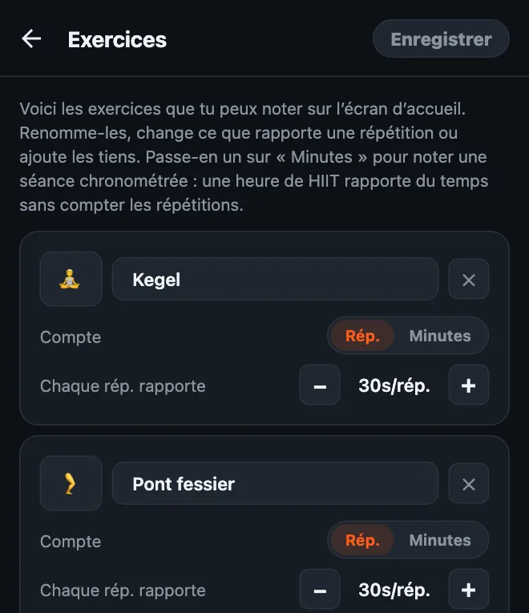
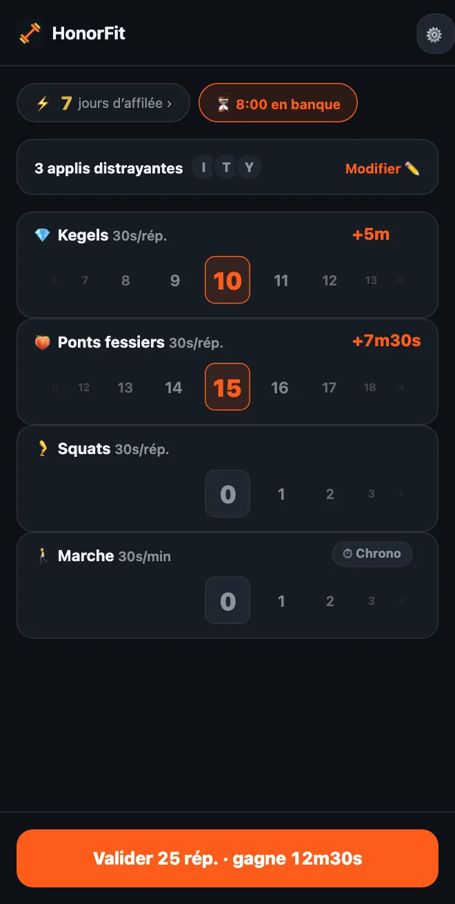

Fais tes Kegel pour débloquer ton téléphone
Salut tout le monde ! J’ai créé HonorFit parce que je voulais des pompes entre moi et Instagram, sans devoir caler mon téléphone pour qu’une caméra les compte (le faire dans une station-service, ce n’était pas mon plus grand moment mdr). Tu fais les répétitions, tu les notes toi-même, et tes applis se débloquent.
Mais les pompes, ce n’est pas le truc de tout le monde. Et l’un des exercices qui collent le mieux à cette idée, ce ne sont pas du tout les pompes : ce sont les exercices de Kegel et le pont fessier. Voici pourquoi, et comment le configurer.
Pourquoi le Kegel colle si bien au système de l’honneur
Personne ne voit un Kegel. Ni la personne à côté de toi dans le bus, ni tes collègues, et encore moins la caméra d’un téléphone. Une appli qui compte les répétitions avec la caméra est littéralement incapable de les compter.
HonorFit n’essaie même pas. Il fonctionne sur l’honneur : tu les fais, tu fais tourner la roue jusqu’au nombre que tu as fait, terminé. Tu peux donc gagner ton temps de TikTok en réunion, dans la file d’attente au supermarché ou sur le canapé, sans que personne ne se doute de rien.
Et ça règle ce que tout le monde dit sur les Kegel : « Je sais que je devrais en faire, mais j’oublie. » Si tu attrapes ton téléphone plein de fois par jour (aucun jugement, moi aussi), chacune de ces fois devient un rappel.
Le pont fessier, lui, n’est pas invisible, mais il se fait facilement par terre ou même au lit, sans matériel, et il va très bien avec le Kegel.
Comment le configurer
Depuis la version 1.15.0, c’est gratuit : tu peux ajouter jusqu’à 3 exercices perso sans Pro, et le Kegel et le pont fessier sont des suggestions à ajouter d’un geste. (Pro, à 3 $ par mois ou 19,99 $ en une fois aux États-Unis, les rend illimités ; le prix varie selon le pays et la devise, et le store t’affiche le tien.) Voilà comment faire :
- Touche la roue dentée sur l’écran d’accueil, puis la carte Exercices.
- Touche la suggestion Kegels, puis Ponts fessiers. Rien à taper, et ils ont leur propre emoji : 💎 pour le Kegel et, eh oui, 🍑 pour le pont.
- Règle Chaque rép. rapporte avec les boutons −/+ (mes suggestions sont plus bas).
- Supprime ceux que tu n’utiliseras pas avec le ✕ (les tractions, peut-être ?), puis touche Enregistrer.

Le tour complet de l’éditeur, séances chronométrées comprises, est dans comment personnaliser tes exercices dans HonorFit.
Combien de temps d’écran par répétition ?
Voici ce que je mettrais pour commencer :
| Exercice | Chaque rép. rapporte | Une série typique rapporte |
|---|---|---|
| 💎 Kegel | 30 secondes | 10 Kegel = 5 minutes |
| 🍑 Pont fessier | 30 secondes | 15 ponts = 7m30s |
| 🚶 Marche (chronométrée) | 30 secondes par minute | 20 minutes de marche = 10 minutes |
Une série de 10 Kegel plus 15 ponts te rapporte donc à peu près 12 minutes et demie. Ajuste à partir de là. Si c’est trop facile d’accumuler du temps, baisse les valeurs. Si tu te surprends à noter des répétitions que tu n’as pas faites, le prix est trop élevé : baisse-le.

Un point sur le Kegel : plus, ce n’est pas mieux. Des sites de santé comme MedlinePlus et la Cleveland Clinic (en anglais) parlent en général de séries d’une dizaine, quelques fois par jour, et disent qu’en faire trop peut rendre les muscles trop tendus. Alors s’il te plaît, ne transforme pas ça en 100 Kegel pour une heure de YouTube ! C’est pour ça que je leur donnerais une valeur correcte par répétition, et que je laisserais le pont fessier, les squats ou une marche rapporter le gros du temps.
Les mouvements de base
Je développe des applis, je ne suis ni coach ni kiné, donc ce n’est que l’idée générale. Les liens ci-dessus donnent de vraies instructions.
- Kegel : contracte les muscles que tu utiliserais pour te retenir de faire pipi, tiens quelques secondes, puis relâche complètement pendant quelques secondes. Ça fait une répétition. Continue de respirer, et essaie de ne pas contracter le ventre, les cuisses ou les fesses. (Couper le jet d’urine, c’est une façon de repérer les muscles une fois, pas quelque chose à pratiquer régulièrement.)
- Pont fessier : allonge-toi sur le dos, genoux pliés et pieds à plat. Serre les fessiers et monte les hanches jusqu’à ce que ton corps forme une ligne droite des épaules aux genoux, marque une pause, puis redescends doucement. Ça fait une répétition. Certaines personnes aiment ajouter un Kegel en haut.
Si tu es enceinte, si tu as accouché récemment, si tu as des douleurs pelviennes ou si les Kegel te font mal, demande d’abord l’avis de ton médecin ou d’un·e kiné spécialisé·e en rééducation du périnée. Ils peuvent te dire ce qui convient à ton corps, et parfois la réponse est « pas de Kegel pour l’instant », et c’est très bien comme ça. Tu peux configurer HonorFit avec ce qu’ils te recommandent à la place.
Quelques conseils
- Garde trois ou quatre exercices. Par exemple Kegel, Pont fessier, Squats et Marche : de quoi couvrir les moments assis, allongé et dehors. Chacun a sa propre roue, donc moins, c’est plus simple.
- Utilise une séance chronométrée pour les jours où tu sors. Passe un exercice sur Minutes (ou touche la suggestion Marche ou Yoga) pour qu’une balade ou un cours rapporte aussi du temps.
- Les routines enregistrées (Pro, à activer dans les Réglages) te permettent d’enregistrer jusqu’à 3 combinaisons, comme « 10 Kegel + 15 ponts », et d’en appliquer une d’un seul geste.
- Bloque une ou deux applis, pas tout. Celle qui te mange tes soirées.
Si le Kegel n’est pas ton truc non plus, j’ai aussi écrit sur des exercices doux à faire même au bureau.
HonorFit Blocker est un bloqueur d’applis gratuit sur iPhone et Android. Système de l’honneur, pas de caméra, rien ne quitte ton téléphone. Le Kegel, le pont fessier et jusqu’à 3 exercices perso sont gratuits. Peut-être que certains d’entre vous vont l’apprécier !